GCC HEALTH SYSTEMS / AI ARCHITECTURE
ONE HEALTHECOSYSTEM.CONNECTEDINTELLIGENCE.
I design the governed intelligence layer between your people, clinical systems and operations — without replacing what already works.
INTEROPERABILITY FIRST
HUMAN-GOVERNED AI
SOVEREIGN BY DESIGN
ANAS SENHAJIPRINCIPAL HEALTH ARCHITECT
HUMAN OVERSIGHT01
LOCAL CONTROL02
AI ORCHESTRATIONHL7 / FHIRCLINICAL GOVERNANCEHEALTH DATALOCAL CLOUDAI ORCHESTRATIONHL7 / FHIR
PUBLICLY VERIFIABLE SIGNALSLINKEDIN ↗
01THE THINKANAS BLUEPRINT
Eight care domains.
Three intelligence engines.
A decision architecture for connecting workflows, data and accountability. Select a domain, then switch engines to see how the operating model changes.
01 / ACTIVE ARCHITECTURE
Patient Access × AI Orchestration
Supervised agents coordinate eligibility, scheduling and pre-admission while preserving explicit human approval points.
METHOD / NOT A PRODUCT CLAIMSee the system
before selecting the AI.
Map decisions, clinical risk, data boundaries and operational friction before defining technology.
Make intelligence move
through real workflows.
Connect agents and interfaces to existing systems through standards, permissions and observable handoffs.
Scale outcomes
without exporting trust.
Keep data boundaries, clinical authority and audit evidence visible from pilot to production.
02SERVICES & ENGAGEMENT
Executive clarity.
Builder-level delivery.
Four ways to engage, each with a defined decision outcome rather than an open-ended transformation promise.
01 / ADVISE
Advisory & Architecture
A leadership-ready view of readiness, priority workflows, risks and target architecture.
- AI readiness audit
- Interoperability roadmap
- Decision-grade business case
02 / CONNECT
AI Integration
Connect a governed AI workflow to the clinical and operational stack already in place.
- HL7 / FHIR / API
- Identity and permissions
- Human approval gates
03 / BUILD

Custom AI Solutions
Reusable modules for high-friction health workflows, designed around measurable operational change.
- Patient access automation
- Document intelligence
- Operations copilots
04 / OPERATE
Managed AI Operations
Keep performance, controls and clinical accountability observable after launch.
- Quality monitoring
- Security and audit evidence
- Clinical oversight rhythm
90-DAY PILOT PATH
From one decision to one governed proof.
Timing is a working model and is confirmed only after discovery.
- 01FrameOwners, outcome, constraintsW01
- 02DesignArchitecture, controls, interfacesW02—04
- 03PilotBuild, test, validateW05—10
- 04DecideEvidence, handover, scale planW11—12
KSALOCAL DATA DECISION
UAEEMIRATE CONTEXT
QATINSTITUTIONAL CONTROLS
03GCC TRUST ARCHITECTURE
Local by decision.
Accountable by design.
Every engagement begins by validating jurisdiction, hosting, identity, clinical accountability and integration obligations with the client’s legal and security owners.
Data boundary first
Define where information may be stored, processed and observed before selecting services.
Standards-led exchange
Use HL7/FHIR and local exchange pathways where technically and contractually applicable.
Human clinical authority
Consequential decisions remain reviewable, traceable and owned by authorised people.
CLAIM STANDARDArchitecture capability statements are not certifications, approvals or integration-partnership claims. Applicable requirements are validated per engagement.
04PUBLIC EVIDENCE
Show the work.
Label the evidence.
No invented logos, anonymous testimonials or unverified deployment numbers. Every credential shown here is tied to a publicly verifiable professional profile.
Oracle Cloud Infrastructure AI Foundations Associate
PUBLIC PROFILE CREDENTIAL
IBM Generative AI: Prompt Engineering Basics
PUBLIC PROFILE CREDENTIAL
Health engineering studies — ESM6ISS / UM6SS
EDUCATION / IN PROGRESS
THINKANAS / HEALTHFOUNDER-LED
05THE ACCOUNTABLE ARCHITECT
One accountable lead.
From boardroom to build.
ThinkAnas Health is a founder-led independent practice. Anas Senhaji combines health-systems learning, hands-on prototyping and executive architecture to keep strategy connected to implementation.
“Technology only matters when it makes care safer, work clearer and trust stronger.”
ANAS SENHAJIPRINCIPAL HEALTH ARCHITECT & INDEPENDENT SYSTEMS INTEGRATOR
06START WITH ONE MISSION
What should your health system solve next?
Create a concise executive brief, keep it private on your device, then continue the conversation directly with Anas.
No form data is uploaded or stored by this website.